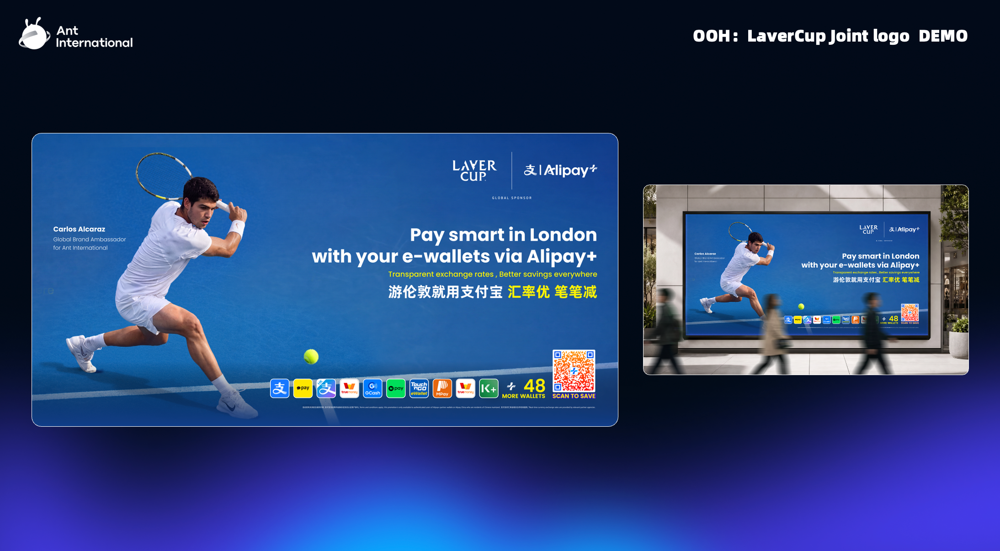

The Laver Cup comes to The O2, 25–27 September. The fan zone opens on the 14th.
Everything we do sits on one timeline: the fan zone and our OOH from September 14, an optional private KA morning once the fan zone is running, and the tournament weekend with the hospitality we hold. Navigate by date on the left.
Sources: the sponsorship-team briefing and the official 2026 benefits deck. Quotas marked TBC are still being confirmed.
The shared booth — last year's awning read Alipay+ · Antom · WorldFirst — with a serve-challenge court and a digital tennis game, between North Greenwich station and the arena doors. Nearly two weeks of footfall.
What we do with it
Our London employees on site in red — volunteer scheme in progress (TBC)
KOLs invited to play and film; clients drop by
UK brand ambassador drop-in for content, if in town
The photo mission: this is the week we gather the great pictures — booth, reds, the O2, our people. The assets the rest of the year reuses.
2026 plan · official2025 · San Francisco
Laver Cup 2026 · WorldFirst UKSEP 14
BY SEP 14 · OOH LIVE
OOH
Ready the day the fan zone opens — red, politely parked next to the blue
A+ owns the blue banner. Ours goes up beside it.

What A+ is running
Alcaraz on blue, the Laver Cup × Alipay+ joint logo, "Pay smart in London with your e-wallets via Alipay+". Big traffic placements, tourist audience.
Our red counterpart — concept, no creative yet
The same frame in WorldFirst red: the sponsorship team's agent-cleared Alcaraz frame and the WF × Laver Cup joint lockup now under agent review. Near the blue banner and the O2 approach. Deadline logic: live by September 14, so the whole fan-zone fortnight works for us. Placements and budget sized with the UK team once the lockup clears.
Laver Cup 2026 · WorldFirst UKBY SEP 14
SEP 16–18 · OPTIONAL
KA
After the fan zone opens, before the matches · one court, one morningOptional
The KA morning — a mini event, for fun.
A premium private morning for ~20 top KA clients and partners: short, winnable games against a retired British tennis great, filmed so every guest leaves with their own clip. Hosting the right people is the objective; content is the by-product.
The guest list
~20 KA clients & partners, invited personally by their account owners. A few KOL/ambassador seats if the UK team wants them. Private invitations only.
The morning
The pro walks on, holds up a World Card: "win a point, and I'll sign it." Short games, plenty of coffee, everyone plays, nobody queues. Done by lunch.
The vibe
A fun, high-touch morning with a KA partnership feel — the kind of room clients remember, and the reason they take the follow-up call.
Ambassador Our UK brand ambassador can headline: plays the opening game, takes the signed World Card, and fronts the film.
Laver Cup 2026 · WorldFirst UKSEP 16–18 · OPTIONAL
THE GAMES · IF THE KA MORNING RUNS
G
Two formats do all the work
One point to win. One serve to survive.
One Point Slam — everyone plays
You — or you and a teammate — against the pro. One point. That's the whole game. ~90 seconds each, winnable enough that everyone tries, and every point is a ready-made 20-second film with a beginning, a middle and a dignified end.
Return the Rocket — the spectacle
With a big-serve legend: the pro serves at full speed, you stand there bravely. Touch it and the room roars. The most shareable fifteen seconds of the morning.
Laver Cup 2026 · WorldFirst UKTHE GAMES
THE GUEST PRO · IF THE KA MORNING RUNS
PRO
Fee estimates only — real numbers come from agency quotes
Who hosts it with us.
Option
Profile (examples of the tier)
Est. fee for one day*
Notes
British legend ✦
Tim Henman — retired, universally known in the UK · WIKI ↗
£15–30k
Recommended. Best recognition per pound.
Big-serve legend ✦
Greg Rusedski — once the fastest serve in the world · WIKI ↗
£10–20k
Also recommended. Makes Return the Rocket the headline.
*One appearance day + usage on our own channels (UK); usage term per agency negotiation, target 12 months. Add 10–20% agency fee. No payments/banking sponsor conflicts; active-tour players ruled out that week. Named players are tier examples, not confirmed targets. Photos & links: Wikipedia.
Laver Cup 2026 · WorldFirst UKTHE GUEST PRO
THE TAKE-HOME · IF THE KA MORNING RUNS
TH
Shot in one morning, useful for a year
Everyone leaves with something. So do we.
For each guest
Their own clip, by QR, within minutes
Signed WorldFirst gifts — rackets, ball tubes, and one signed giant World Card for the best point of the day
For the account owners
A warm, personal follow-up excuse inside 72 hours
Every seat mapped to an account plan before invites go out
For our channels
One 60–90s film + 15s cuts
Cleared footage of a British tennis great with our product — reusable for a year
Ambassador The ambassador's clip becomes the hero asset — their name and reach carry it beyond our own channels.
Laver Cup 2026 · WorldFirst UKTHE TAKE-HOME
THE COST · IF THE KA MORNING RUNS
£
All-in bands — quotes will sharpen them
What the morning costs.
Cost line
Lean
Standard ✦
The pro (day + 12-month organic use)
£10–20k
£15–30k
Court hire + light dressing
£2–4k
£3–6k
Production (one crew, edit, QR clips)
£6–10k
£10–16k
Gifts, signed
£2–3k
£3–5k
Hospitality (~20 guests)
£2–4k
£3–6k
Total
~£22–40k
~£35–60k
Budget home: UK hospitality / field events. Quotes are free and legends book early — sponsorship team sees the concept before any brief goes out. This deck introduces the idea; nothing is committed here.
Laver Cup 2026 · WorldFirst UKTHE COST
WK OF 22 · TOURNAMENT WEEK
22
The honest limits, before the weekend starts
Inside the arena, everything is A+. By contract.
2025 · in-venue = Alipay+ only
The facts
Every board, wall and screen inside carries Alipay+ — locked in the contract, seen in 234 broadcast markets
Official photos all have A+ backdrops; no WF photographer inside — official shots arrive via a shared folder after each day
Social rule: no player images on our channels — our people, our booth, our banners, the Laver logo only
Alcaraz plays the tournament and does nothing else in the UK
Conclusion: our budget works the streets, the fan zone and our own channels — not the arena.
Laver Cup 2026 · WorldFirst UKWK OF 22
WED 24 · OPENING GALA
24
The night before play starts · black tie
One night with both teams.
2025 · opening night
~20 seats across ANI · WF count TBC, expect 1–2
Both teams on stage, the sponsor family in the room. Not a client asset — WorldFirst realistically sends one or two senior people; leadership decides who.
Laver Cup 2026 · WorldFirst UKWED 24
FRI 25 · SESSIONS 1–2
25
First day of play · VIP experiences are rights-ticket only
Play begins. The tours begin.
2025 · back-of-house tour
Friday morning · Rocky Club only
Back-of-house tour before Session 1 — court floor and players' areas, only for rights-ticket holders who hold Session 1.
2025 · player photo
Before Sessions 1–4 · Rocky Club only
Photos with players ~30 minutes before each session: 10 people per session, drawn from the ~40 rights tickets ANI-wide (WF share TBC). Which players appear is a blind draw — Alcaraz possible, never promised.
Laver Cup 2026 · WorldFirst UKFRI 25
SAT 26 · THE BIG DAY
26
The highest-value room of the week
Breakfast with Federer. Sessions 3–4.
2025 · Federer breakfast
60 seats confirmed · WF allocation TBC (last year ~6)
Saturday morning, C-level clients only. Group execs, the AAC and the board take a large share, so WF's allocation is small — prioritise clients holding Saturday-afternoon (Session 3) tickets, who are already in London that morning. Format per the organisers: Federer talks, then group and one-on-one photos, plus VIP gifting. LinkedIn post if filming is allowed (TBC).
Ambassador The flagship ambassador client is the PR centrepiece here — the one-on-one Federer photo and the story built around it.
Laver Cup 2026 · WorldFirst UKSAT 26
SUN 27 · THE FINAL
27
Last morning, last session
Courtside practice, then the final.
2025 · courtside practice
Final-day morning · Rocky Club only
Courtside practice viewing before Session 5. Last year 40 were invited and 9 came — mornings are hard; plan guests accordingly. Then the final, and the close of the week.
Laver Cup 2026 · WorldFirst UKSUN 27
REFERENCE · HOSPITALITY NUMBERS
Nº
As known today — quotas TBC with the sponsorship team
Small numbers. Choose carefully.
Benefit
Numbers
Rules & notes
Federer breakfast
60 seats ANI-wide; WF allocation TBC (last year ~6)
All five sessions + tour + player photos + courtside practice + Mercedes shuttle + official hotels. Bought tickets get none of these.
Opening gala
1–2 senior WF people (TBC)
Leadership decision.
Purchased tickets
As many as we buy
For KOLs and extra guests. No special experiences attached.
Signed items
Small quantity — to request
Alcaraz-signed items as gifts for top customers during the tournament period; needs the formal ask.
Employee 50% tickets
TBC — payment link not built
Internal perk only — never offered to clients.
Transport & hotels
Rights-ticket guests only
Mercedes shuttle between official hotels and the O2; 2026 London hotel list TBC — match client bookings to it when it lands.
Laver Cup 2026 · WorldFirst UKTHE NUMBERS
OUR GOALS
G
Reported on business return, not attendance
Our goals.
New revenue
90-day
attribution window
Every hosted guest → named owner → follow-up inside 72 hours → pipeline entry
New-customer revenue, co-owned with commercial/KA, as the headline; NFM secondary
Relationships
TBC
VIP + KA clients hosted across the window
Every seat mapped to an account plan before invites go out
Breakfast, club seats, and the optional KA morning counted together
Presence & content
2 wks
of fan-zone footfall + the photo week
Red OOH live by Sep 14; booth, reds and O2 photo library gathered that fortnight
Owned footage reused on web, decks and social all year
Draft targets agreed with commercial once quotas are confirmed. This deck introduces the plan — nothing is committed here. The sponsorship team sees everything before any brief goes out.